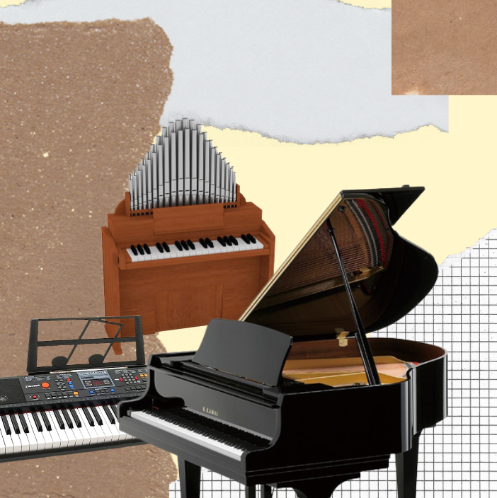

In the wonderful world of music, there once an instrument that could make you feel like a musical wizard with just the touch of a finger. This extraordinary contraption is none other than the keyboard! Picture a row of keys, each one like a magical portal to a different sound. Join me on a hilarious and melodic adventure as we explore the definition of keyboards, meet some quirky example instruments, uncover the mechanics behind their sound-making powers, and discover how each sound adds its own special spice to a song. Get ready to tickle those ivories and let the musical laughter begin!

Keyboards, my friend, are a bunch of keys that hold the power to make music. They're like a secret code that unlocks a symphony of sound. When you press a key on a keyboard, it's like opening a door to a whole new world of musical possibilities. These magical keys can be found on instruments like the piano, organ, synthesizer, and electronic keyboards. Each one has its own quirks and charms, just waiting to be explored.
Let's meet some of these zany instruments that fall under the keyboard category. First up, we have the piano, the granddaddy of them all. With its shiny black and white keys and its ability to go from soft and gentle to loud and thunderous, the piano is like a musical superhero. Then we have the organ, a beast of an instrument with pipes that go on for miles. It's the kind of instrument you'd find in a haunted castle or a creepy church, ready to unleash some spine-tingling sounds. And let's not forget about synthesizers and electronic keyboards, the wild and wacky cousins of the keyboard family. They can make all sorts of crazy sounds, from futuristic robot noises to funky disco beats. These instruments are like the class clowns of the musical world.
Now, let's dive into the mechanics of these keyboard instruments. When you press a key on a piano, it sets off a chain reaction of awesomeness. Inside the piano, there are little hammers that jump up and hit strings, making them vibrate and produce sound. The length and thickness of the strings determine the pitch of the note. It's like a mini percussion orchestra happening inside the piano! With synthesizers and electronic keyboards, things get even more bonkers. When you press a key on these bad boys, it triggers electronic circuits that create all sorts of wild and wacky sounds. It's like a musical science experiment happening right before your eyes (or should I say, ears?).
Now, let's talk about how each sound adds its own special spice to a song. The piano, with its wide range of notes and dynamic capabilities, can set the mood for a whole piece of music. It can go from soft and delicate, like a gentle whisper, to loud and powerful, like a thunderstorm on a summer night. The organ, with its deep and resonant tones, can add a sense of grandeur and drama to any musical composition. It's like having your very own musical superhero fighting the forces of boredom. And when it comes to synthesizers and electronic keyboards, the possibilities are endless! They can create all sorts of crazy and unique sounds that can transport you to a different dimension. They're like musical time machines, taking you on a wild ride through soundscapes you never even knew existed.
All in all, keyboards are like the magical keys to a musical wonderland. They're the gateway to a world of laughter, creativity, and sonic adventures. With instruments like the piano, organ, synthesizer, and electronic keyboards, you can unleash your inner musical wizard and create melodies that will make people dance, laugh, and cry. So, my friend, grab a seat at the keyboard, let your fingers do the talking, and get ready to embark on a hilarious and melodic journey through the whimsical world of music!